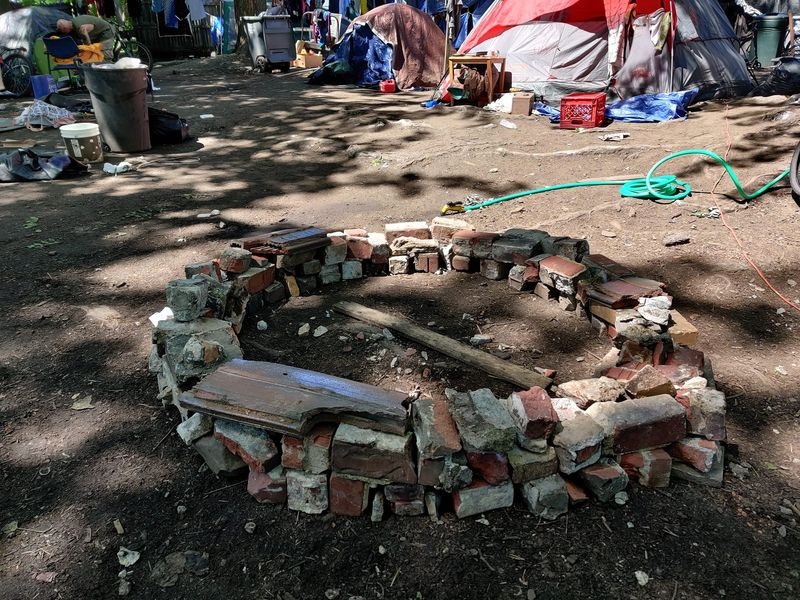

Mobile uploads
There is great suffering in the homeless community. All of the people who live in the Church of the Nomadic Spirit Garden Tent Village have needlessly lost friends to the street. (We just lost our friend, Andrew, last night.)
As a church (the Church of the Nomadic Spirit owns this land as sacred worship space) we are given the right to worship in the way that is important to us. To that end, we have just created our Sacred Ceremonial Worship Ring. We will use it as a place to safely light a fire to remember our lost loved ones, to remember our fellow nomads that have used a fire ring like this for hundreds of thousands of years and to celebrate human freedom and autonomy to live our life the way we choose to live.
We have a water hose right by the fire that will always be on in case we need it.
@[100064805494040:2048:City of Akron, Ohio - Mayor's Office]
@[100064622113875:2048:Akron Police Department]
@[100068844145268:2048:Akron Fire Department]
Please respect our right to worship the way we choose to worship. We kindly ask you to stay away from our fire.